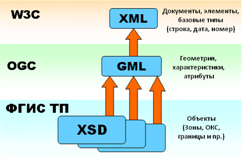

Документ GML – это просто текстовый файл, сформированный в соответствии с правилами XML-разметки и согласно схеме данных XSD.
Начиная с 01.01.2020 г. все документы территориального планирования размещаются в ФГИС ТП исключительно в формате данных GML.
Приказ определяет структуру и содержание цифровых объектов документа территориального планирования, а также вид и порядок отображения.
На текущий день, проектные институты, выполняющее работы по разработке генеральных планов, формируют документы территориального планирования как векторную модель с атрибутивными данными и координатным описанием в соответствии с требованиями Приказа.
Вместе с тем, выпускаемые в настоящее время или разработанные ранее электронные документы, как правило не соответствует требованиям Приказа.
Тому виной две причины: